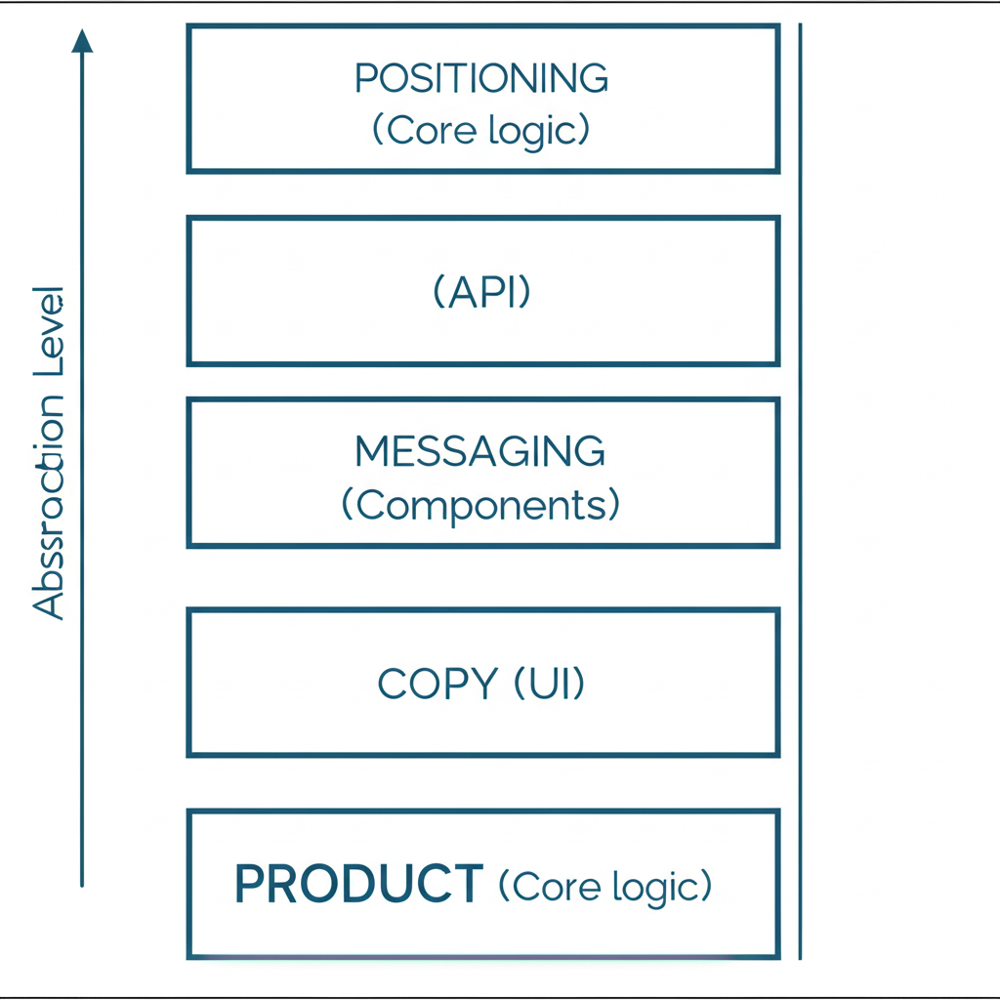

Part 1: Positioning Fundamentals
Why Positioning Matters More for Dev Tools
Developers are skeptical. They've seen too many tools oversell and underdeliver.
Your positioning must:
- Be honest about what you do and don't do
- Acknowledge tradeoffs
- Speak to the right audience specifically
- Stand out in a crowded market
The Positioning Stack
Think of it like code:
- Product = Core logic / backend
- Positioning = API
- Messaging = Component library
- Copy = UI / frontend
Get the positioning (API) wrong, and everything downstream breaks.
Part 2: Positioning Approaches
Competitor-Focused Positioning
When it works: In mature categories where developers know alternatives.
Axiom example:
- Explicitly state how you compare to DataDog, Splunk, SumoLogic
- Don't pretend you're the only option
- Own your unique selling point clearly
Takes guts, but developers appreciate honesty.
The Anchoring Technique
Anchor on something your audience already knows.
Classic example: "Open-source Firebase alternative" (Supabase)
Other flavors:
- "If X and Y had a baby that focused on Z"
- Reference to 2-3 known tools that together explain you
Tinybird example: One sentence referencing ClickHouse, Supabase, and Postgres. Massive meaning to the right audience.
Warning: You need to know your audience well enough to know what concepts they understand.
Category Creation vs. Category Fit
Wasp case study:
- "Language for web devs" → Scary
- "Framework for web devs" → Numbers shot up
Category words carry expectations:
- Language → Huge learning curve
- Framework → Approachable
- Platform → Enterprise, complex
- Tool → Lightweight, tactical
- Solution → Consulting-like
Choose based on the expectations you want to set.
Narrow vs. Broad Positioning
Don't be "for every company on the planet."
Snyk example: Started with narrow positioning. Didn't try to be everything from day one.
Builder.ai warning: "Software platform for every company and idea on earth" → Bankruptcy after $445M raised.
Guidance:
- Early: Start narrow, build credibility, one fantastic product
- Later: Go wider once you've won a category
Part 3: Messaging Frameworks
The keyBoard / whiteBoard / Boardroom Framework
Different audiences need different content:
| Type | Audience | Focus |
|---|---|---|
| keyBoard | Developer | How to use, code examples |
| whiteBoard | Architect | How it fits, design patterns |
| Boardroom | CTO/VP | Business value, risk, compliance |
Create messaging for each, but land homepage on your champion (usually the dev).
The Clear Copy Test
Two versions tested:
- "The easiest way to capture and transcribe meetings"
- "The API for developers to access meeting recordings, transcripts and metadata"
Version 2 won because it clearly says what it does.
Lesson: For developers, clarity beats cleverness. Say what you do.
Part 4: Pricing Page Fundamentals
Elena Verna's Pricing Page DNA
Structure:
- No placeholder header copy ("Pricing that works for every team")
- Logos above main table for social proof
- 3 plans: Individual / Team / Organization
- Clear "for whom" each plan is designed
- "Everything in +" pattern to show upgrades
- CTA moved high up the page
Retool's Hosting Clarity
Instead of ambiguous deployment terminology:
- "Cloud (we host)"
- "Self-hosted (you host)"
Simple. Eliminates confusion.
The B2B Pricing Dilemma
From Kite post-mortem: "Individual developers do not pay for tools."
Reality:
- Individual devs rarely pay
- Teams/organizations do
- Exception: JetBrains (but they're special)
Implication: Your pricing should have a clear path from free → team → enterprise.
Part 5: Pricing Models for Dev Tools

The 1-2-3 GTM Framework (Adam Gross)
Three motions, three value propositions:
| Motion | Value Prop | For | Metric |
|---|---|---|---|
| Free | Individual dev | Personal productivity | Adoption |
| Self-serve | Team | Collaboration | MRR |
| Enterprise | Organization | Compliance, scale | ACV |
Usage-Based Pricing
Challenge: With infrastructure tools, usage can be hard to predict.
Options:
- Storage-based
- Compute-based
- API calls
- Events
- Seats
Tips:
- Make it predictable
- Provide estimators
- Set usage alerts
- Offer enterprise pricing for predictability
Part 6: Free Tier Strategy
The Free Tier Dilemma
Free tier should:
- Let devs experience full value
- Create habit and lock-in
- Enable self-serve upgrades
- Not cannibalize paid tiers
What to Include in Free
- Full product capability (limited usage)
- Core integrations
- Basic support
- Community access
What to Gate
- Team features
- Advanced integrations
- Priority support
- SLAs
- Compliance features
- Usage scale
Part 7: Positioning for Different Stages
Early Stage: Narrow Positioning
- Focus on one use case
- Target one persona
- Own one problem completely
- Build credibility in that space
Growth Stage: Expanding Positioning
- Add adjacent use cases
- Target related personas
- Maintain core strength
- Carefully expand messaging
Mature Stage: Platform Positioning
- Multiple products/solutions
- Multiple personas
- Category leadership
- Ecosystem play
Part 8: Communicating Pricing
Cloud vs Self-Hosted
Make it crystal clear what each means for:
- Hosting responsibility
- Data location
- Pricing model
- Support level
- Compliance
Enterprise Pricing
What to show:
- All enterprise features prominently
- Custom pricing available
- SLAs included
- Compliance certifications
- Dedicated support
What to gate:
- Actual price (contact us)
- Custom integrations
- Volume discounts
The "Convince Your Boss" Pack
Create materials for when developers need to sell internally:
- Value prop summary
- Feature comparison
- Case studies
- ROI calculator
- Email template for their boss
Part 9: Positioning Through Content
Owning the Problem
Neo4j example: Graph database newsletter that owned "graph thinking" mindshare before pushing product.
Create content that positions you as the expert in the problem space.
Comparison Content
Developers search competitively more than typical buyers.
Create comparison pages:
- Feature-by-feature comparisons
- Migration guides from competitors
- "When to use us vs them" honesty
Architecture Content
Show how your tool fits in the ecosystem:
- Reference architectures
- Integration patterns
- "Works with" diagrams
Part 10: Testing Positioning
Quick Validation
Ask developers:
- "What does this product do?"
- "Who is it for?"
- "Why would I use it over [alternative]?"
If answers don't match your intent, reposition.
Homepage Header Test
Show your header to 5 target developers.
- Can they explain what you do?
- Do they get who it's for?
- Is the differentiation clear?
"Explain to a Friend" Test
Ask users how they'd explain your product to a dev friend.
Their words = your messaging.
Resources & Further Reading
Positioning
- Developer Product Positioning Examples That Slap — DevPMM Newsletter
- Who to Address on the Dev Tool Homepage
- Selling to Developers (Users vs Buyers)
Pricing Pages
- The DNA of a Great Pricing Page — Elena Verna
- Pricing & Billing Teardowns (Linear, Supabase, Vercel, Mintlify, PostHog) — Schematic
GTM Frameworks
- 1-2-3 Framework for GTM — Adam Gross (Heavybit)
- Bottom-Up vs Top-Down vs Middle-Out Discussion — Hacker News
Examples
- Axiom — Competitor-focused positioning
- Snyk's Narrow Initial Positioning